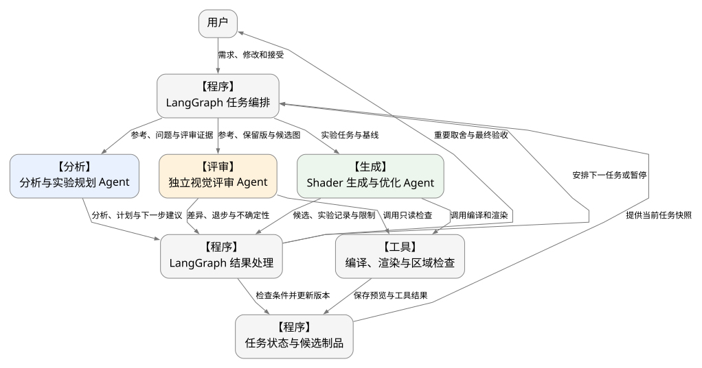
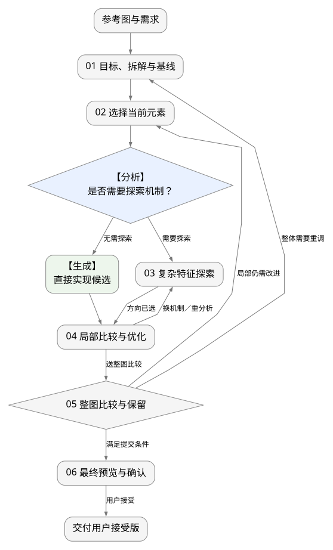
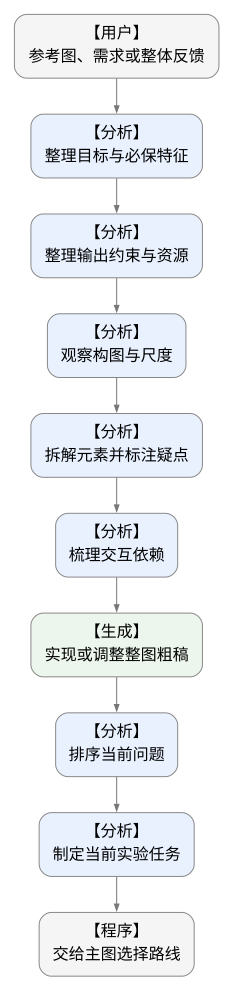
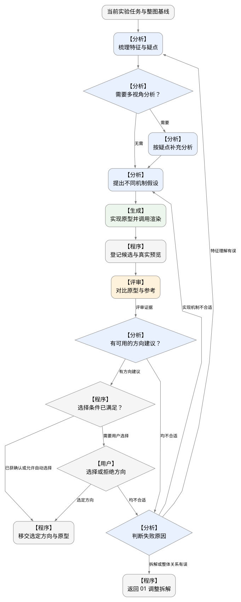
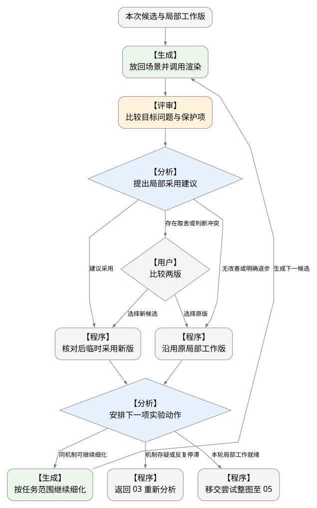
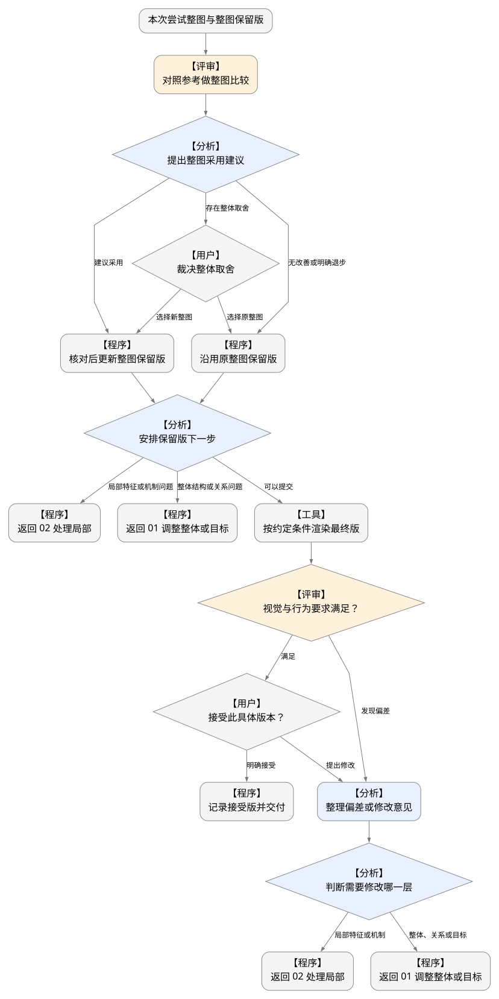

V3 · 2026-09-09。本文是待实现的架构设计。
首版确定三类独立 Agent。分析与生成分别拥有自己的任务上下文；多候选或多视角需要并行时，可以创建同类角色的多个任务实例。
| 角色 | 负责的工作 | 返回的结果 |
|---|---|---|
| 分析与实验规划 Agent | 理解参考与需求，拆解元素和依赖，提出机制假设，选择当前问题，综合评审后安排下一步 | 分析结果、实验任务、采用或回退建议 |
| Shader 生成与优化 Agent | 实现原型与候选，修复编译，调用渲染，局部优化与场景组合 | Shader、真实预览、实验记录、实现限制 |
| 独立视觉评审 Agent | 对照参考、整图保留版与新候选，检查目标改善、保护项退步与整体观感 | 差异报告、观察区域、判断不确定性 |
分析 Agent 规划“做哪项实验”，生成 Agent 规划“怎样完成这项实验”。评审 Agent 负责证据；重要主观取舍和最终接受由用户决定。
| 执行组件 | 责任 |
|---|---|
| LangGraph 主图 | 根据分析建议派发任务，检查目标和基线版本，维护预算，执行状态更新，暂停与恢复 |
| Deep Agents | 用于搭建角色内部的工作循环，重点支持生成过程的文件操作、工具调用和上下文管理；各角色按需配置能力 |
| 普通工具与函数 | 编译、真实渲染、指标与区域检查、候选登记、版本保存与交付 |
| 任务状态与制品 | 保存目标、候选、整图保留版、用户接受记录、预算及对应的代码和预览 |
研究和多视角分析归分析 Agent；优化与合成归生成 Agent；局部与整图检查归评审 Agent。图中的“程序”和“工具”是普通代码职责。
下图显示任务与产物如何传递。任务编排和结果处理是同一个 LangGraph 主图中的逻辑部分；各节点不代表独立部署的服务。

flowchart TB
user(["用户"])
dispatch["【程序】LangGraph 任务编排"]
analysis["【分析】分析与实验规划 Agent"]
generation["【生成】Shader 生成与优化 Agent"]
review["【评审】独立视觉评审 Agent"]
tools["【工具】编译、渲染与区域检查"]
transition["【程序】LangGraph 结果处理"]
state["【程序】任务状态与候选制品"]
user -->|"需求、修改和接受"| dispatch
dispatch -->|"参考、问题与评审证据"| analysis
dispatch -->|"实验任务与基线"| generation
dispatch -->|"参考、保留版与候选图"| review
analysis -->|"分析、计划与下一步建议"| transition
generation -->|"候选、实验记录与限制"| transition
review -->|"差异、退步与不确定性"| transition
generation -->|"调用编译和渲染"| tools
review -->|"调用只读检查"| tools
tools -->|"保存预览与工具结果"| state
transition -->|"检查条件并更新版本"| state
state -->|"提供当前任务快照"| dispatch
transition -->|"安排下一任务或暂停"| dispatch
transition -->|"重要取舍与最终验收"| user
每次任务绑定一个明确的问题和基线。一次实验内部可以包含多次编译修复与小步试验，但每个有效候选和预览均需登记。
| 交接 | 最少需要的信息 |
|---|---|
| 主图 → 分析 | 用户目标、参考图、当前整图、问题记录、已有假设、最新评审和剩余预算 |
| 分析 → 主图 → 生成 | 目标版本、起始整图版本、作用元素或组合、待验证假设、允许修改范围、保护项、预算与结束条件 |
| 生成 → 主图 → 评审 | 候选代码与真实预览、捕获条件、起始基线、目标问题与保护项；明确未实现或尚未验证的内容 |
| 评审 → 主图 → 分析 | 可定位的视觉差异、改善和退步、判断依据与不确定性；观察与原因推测分开记录 |
| 分析 → 主图 | 下一步动作、作用范围、理由和依据的候选版本；程序负责检查与执行 |
保留原有六阶段。流程框表示工作阶段，具体由谁完成在后续细节图中标注。
| 阶段 | 主要分工 |
|---|---|
| 01 目标、拆解与基线 | 分析整理目标、拆解和依赖；生成实现粗稿；程序登记初始基线 |
| 02 选择当前元素 | 分析选择当前问题，形成元素或关联组合的实验任务 |
| 03 复杂特征探索 | 分析提假设；生成原型；评审对比；分析形成选择建议；重要方向由用户确认 |
| 04 局部比较与优化 | 生成优化；评审检查；分析提出采用与后续动作；程序检查并执行 |
| 05 整图比较与保留 | 评审整图；分析综合建议；程序决定是否满足更新条件并记录整图保留版 |
| 06 最终预览与确认 | 工具按约定条件渲染；评审检查；用户接受；程序记录与交付 |

flowchart TB
input(["参考图与需求"])
prepare["01 目标、拆解与基线"]
selectElement["02 选择当前元素"]
route{"【分析】是否需要探索机制？"}
simple["【生成】直接实现候选"]
explore["03 复杂特征探索"]
refine["04 局部比较与优化"]
evaluate{"05 整图比较与保留"}
confirm["06 最终预览与确认"]
done(["交付用户接受版"])
input -->prepare
prepare -->selectElement
selectElement -->route
route -->|"无需探索"| simple
route -->|"需要探索"| explore
simple -->refine
explore -->|"方向已选"| refine
refine -->|"换机制／重分析"| explore
refine -->|"送整图比较"| evaluate
evaluate -->|"局部仍需改进"| selectElement
evaluate -->|"整体需要重调"| prepare
evaluate -->|"满足提交条件"| confirm
confirm -->|"用户接受"| done
只返回 02 时复用当前场景；需要换机制或修正特征时回到 03；目标、拆解或整体关系变化时回到 01。六阶段不要求每轮从头重跑。

flowchart TB
input(["【用户】参考图、需求或整体反馈"])
target["【分析】整理目标与必保特征"]
constraints["【分析】整理输出约束与资源"]
observe["【分析】观察构图与尺度"]
split["【分析】拆解元素并标注疑点"]
relations["【分析】梳理交互依赖"]
baseline["【生成】实现或调整整图粗稿"]
prioritize["【分析】排序当前问题"]
choose["【分析】制定当前实验任务"]
output(["【程序】交给主图选择路线"])
input -->target
target -->constraints
constraints -->observe
observe -->split
split -->relations
relations -->baseline
baseline -->prioritize
prioritize -->choose
choose -->output

flowchart TB
input(["当前实验任务与整图基线"])
features["【分析】梳理特征与疑点"]
needLens{"【分析】需要多视角分析？"}
lenses["【分析】按疑点补充分析"]
hypotheses["【分析】提出不同机制假设"]
prototypes["【生成】实现原型并调用渲染"]
pool["【程序】登记候选与真实预览"]
review["【评审】对比原型与参考"]
choice{"【分析】有可用的方向建议？"}
selectionReady{"【程序】选择条件已满足？"}
humanChoice{"【用户】选择或拒绝方向"}
diagnose{"【分析】判断失败原因"}
returnGlobal(["【程序】返回 01 调整拆解"])
output(["【程序】移交选定方向与原型"])
input -->features
features -->needLens
needLens -->|"需要"| lenses
needLens -->|"无需"| hypotheses
lenses -->hypotheses
hypotheses -->prototypes
prototypes -->pool
choice -->|"均不合适"| diagnose
diagnose -->|"实现机制不合适"| hypotheses
diagnose -->|"特征理解有误"| features
diagnose -->|"拆解或整体关系有误"| returnGlobal
pool -->review
review -->|"评审证据"| choice
choice -->|"有方向建议"| selectionReady
selectionReady -->|"已获确认或允许自动选择"| output
selectionReady -->|"需要用户选择"| humanChoice
humanChoice -->|"选定方向"| output
humanChoice -->|"均不合适"| diagnose

flowchart TB
input(["本次候选与局部工作版"])
preview["【生成】放回场景并调用渲染"]
compare["【评审】比较目标问题与保护项"]
adopt{"【分析】提出局部采用建议"}
resolve{"【用户】比较两版"}
keepNew["【程序】核对后临时采用新版"]
keepOld["【程序】沿用原局部工作版"]
nextStep{"【分析】安排下一项实验动作"}
tune["【生成】按任务范围继续细化"]
reanalyse(["【程序】返回 03 重新分析"])
output(["【程序】移交尝试整图至 05"])
input -->preview
preview -->compare
compare -->adopt
adopt -->|"建议采用"| keepNew
adopt -->|"无改善或明确退步"| keepOld
adopt -->|"存在取舍或判断冲突"| resolve
resolve -->|"选择新候选"| keepNew
resolve -->|"选择原版"| keepOld
keepNew -->nextStep
keepOld -->nextStep
nextStep -->|"同机制可继续细化"| tune
tune -->|"生成下一候选"| preview
nextStep -->|"机制存疑或反复停滞"| reanalyse
nextStep -->|"本轮局部工作就绪"| output

flowchart TB
input(["本次尝试整图与整图保留版"])
compare["【评审】对照参考做整图比较"]
promote{"【分析】提出整图采用建议"}
resolve{"【用户】裁决整体取舍"}
keepNew["【程序】核对后更新整图保留版"]
keepOld["【程序】沿用原整图保留版"]
scope{"【分析】安排保留版下一步"}
local(["【程序】返回 02 处理局部"])
globalReturn(["【程序】返回 01 调整整体或目标"])
final["【工具】按约定条件渲染最终版"]
finalCheck{"【评审】视觉与行为要求满足？"}
accept{"【用户】接受此具体版本？"}
feedback["【分析】整理偏差或修改意见"]
modifyScope{"【分析】判断需要修改哪一层"}
done(["【程序】记录接受版并交付"])
feedbackLocal(["【程序】返回 02 处理局部"])
feedbackGlobal(["【程序】返回 01 调整整体或目标"])
input -->compare
compare -->promote
promote -->|"建议采用"| keepNew
promote -->|"无改善或明确退步"| keepOld
promote -->|"存在整体取舍"| resolve
resolve -->|"选择新整图"| keepNew
resolve -->|"选择原整图"| keepOld
keepNew -->scope
keepOld -->scope
scope -->|"局部特征或机制问题"| local
scope -->|"整体结构或关系问题"| globalReturn
scope -->|"可以提交"| final
final -->finalCheck
finalCheck -->|"满足"| accept
finalCheck -->|"发现偏差"| feedback
accept -->|"明确接受"| done
accept -->|"提出修改"| feedback
feedback -->modifyScope
modifyScope -->|"局部特征或机制"| feedbackLocal
modifyScope -->|"整体、关系或目标"| feedbackGlobal